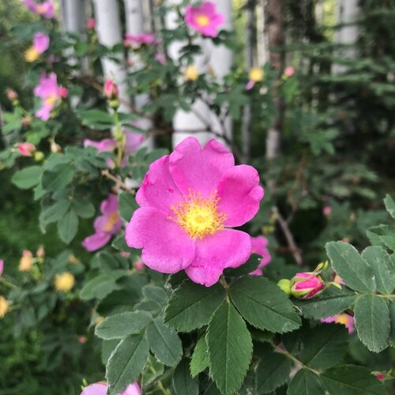

Rosa woodsii
Common name
Interior rose, Woods' rose
Family
Rosaceae
Family common name
Rose family
Blooms
June - August
Habitat and Range
Wetlands in mixed coniferous forests, mostly on the east side of the divide, 3300' - 8300'.
Range Map